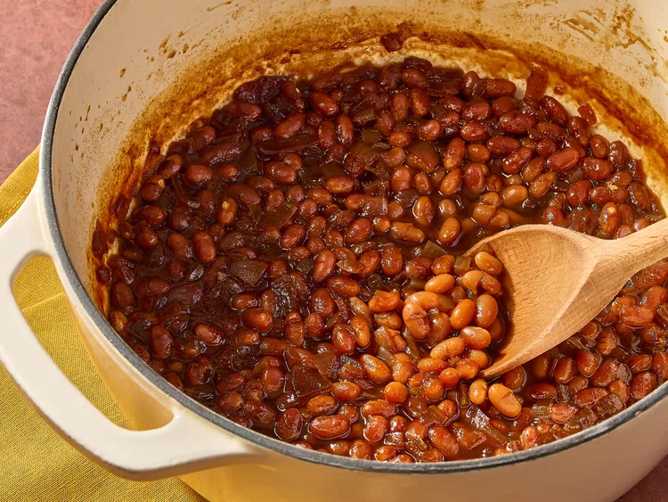
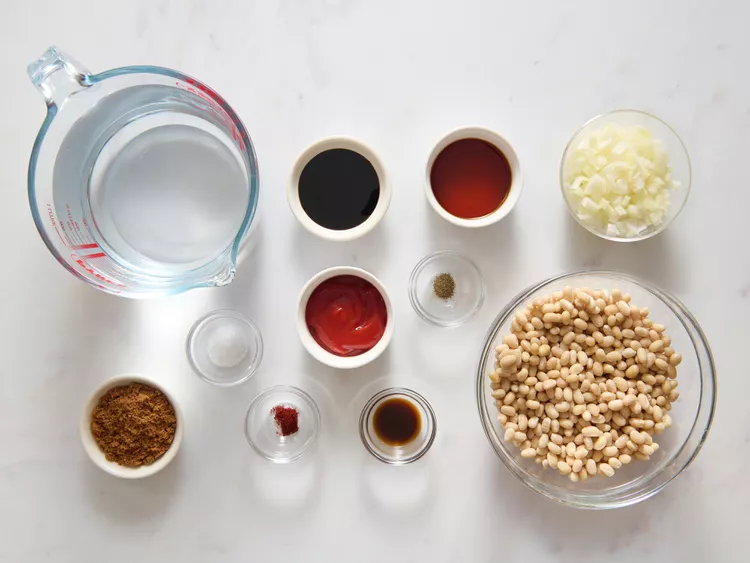
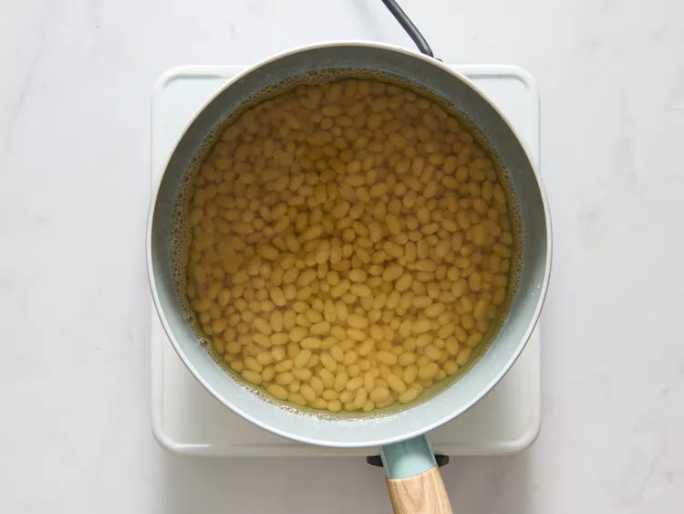
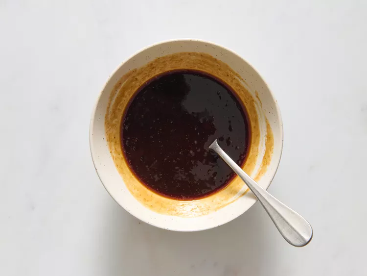
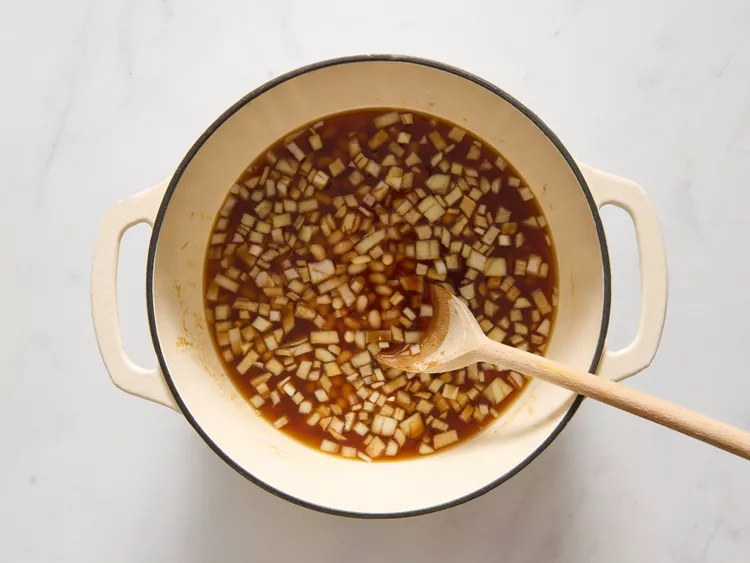
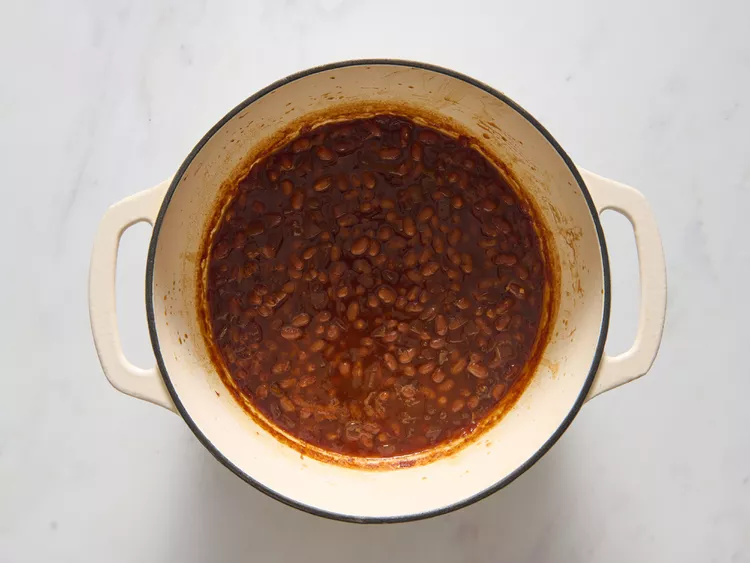

These baked beans from scratch are made by combining navy beans, molasses, and maple syrup to make this classic dish at home.
Gather the ingredients
Place beans in a large saucepan with 4 cups of water. Bring to a boil over high heat, then reduce heat to medium-low, cover, and simmer 1 hour.
Preheat the oven to 375 degrees F (190 degrees C). Stir ketchup, maple syrup, brown sugar, molasses, Worcestershire sauce, salt, pepper, and chili powder together in a small bowl; set aside.
Once beans have simmered for 1 hour, drain, and reserve cooking liquid. Pour beans into a 1 1/2-quart casserole dish; stir in chopped onion and molasses mixture. Stir in enough reserved cooking liquid so sauce covers beans by 1/4 inch.
Cover and bake in the preheated oven for 10 minutes; reduce heat to 200 degrees F (95 degrees C) and cook 6 hours longer, stirring beans after they have cooked for 3 hours. Once beans are tender and sauce has reduced and is sticky, remove from the oven, stir, recover, and allow to stand 15 minutes before serving.
Place navy beans into a large pot and cover with several inches of cold water; bring to a boil over high heat. Once boiling, turn off the heat, cover, and let stand 1 hour. Drain and rinse before using.